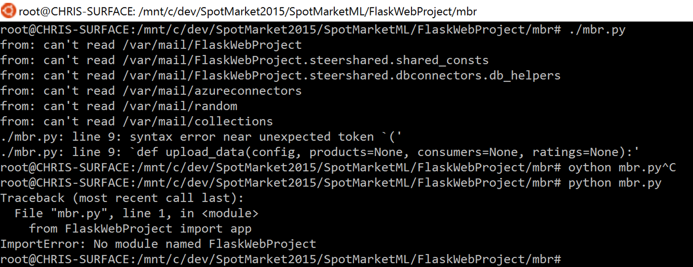
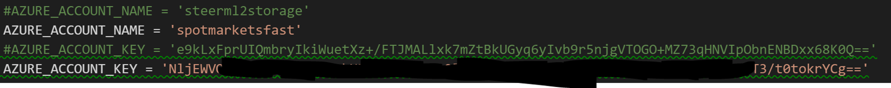
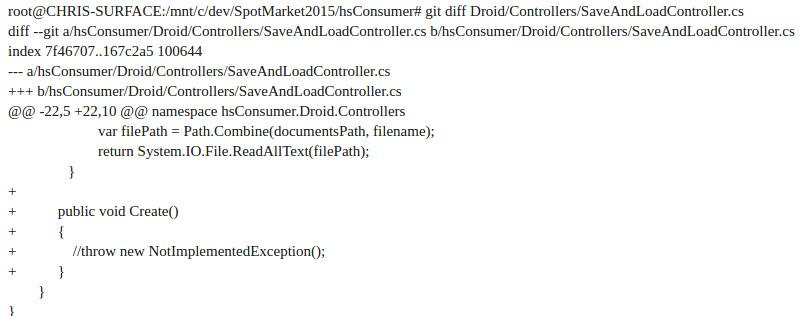

Recommendation engine
Problems faced and resolutions
SpotMarketML
It appears as though there is some sort of Flask project in this repository. Opening the Visual Studio solution doesn’t appear to load all the files (is the project broken?)

We have been following the Matchbox Recommender deployment guide. Unfortunately, we were stuck on this bit:

This is because when we run the code, we get errors about not being able to find the FlaskWebProject, despite being within it.
This is because when we run the code, we get errors about not being able to find the FlaskWebProject, despite being within it.
hsConsumer
This project out the box from VSTS will not compile under VS2015. I’m not sure if this is because we have an old version of the code, but there is a non-fully-implemented interface by default. This is in Droid/Controllers/SaveAndLoadController.cs. In order to make this compile the following diff was applied:
We just commented out the default NotImplementedException, but it does not matter as even if we set a breakpoint on that line it is never hit anyway. This change appears to make the code compile, but it immediately crashes upon launch in the Android simulator. We have targeted Android 4.4 and 6.0.1 using the latest build tools and SDKs available from Microsoft and Google, including all the latest Xamarin updates. We have also cleared out various Xamarin caches. Even getting it to build was triggering weird Visual Studio errors about not being able to find the SDK but the cache clearing fixed that. The most irritating sticking point here is that the application does not launch; it just crashes on open. There aren’t any error logs as the app doesn’t load far enough for the debugger to attach. We don’t have Hyper-V enabled on our laptop at the moment (as we were using VMware for some other work and only one hypervisor can be active at once). At the moment we have no recommendation engine to build atop of (as it won’t deploy / run) and no current app to work off of or analyse (so we still don’t really have much idea of how the UX should be).
Weekly log
| Week | Reemma | Chris | Ken |
|---|---|---|---|
| 1-2 | This week, I have spent most of my efforts communicating with our clients to secure goals for this project and negotiate what features could be implemented. I have also set up and spent some time navigating around the different environments that we could have to use. My main contribution to the team this week has been through compiling the bi-weekly report and communicating effectively with our during the meetings with our client, as well as helping brainstorm ideas as to how we could approach the project. Having no experience programming in C# prior to this, I will be focusing on mastering this language as well as exploring the possibilities of how I can contribute more in future | I have been in contact with Microsoft and helped to coordinate having a joint meeting between all three Spot Market teams and the clients. This meant that we could all come together and have a better understanding of what the larger goal of the project is, in addition to understanding what our section is. This way we should be able to avoid project overlap, and send Microsoft something useful. I have also made recommendations to the team about which development tools we should get, and coordinated with Microsoft to get the team set up on VSTS. | I have had a meeting with our clients and figured out what the client needs and their requirement, and read the project brief to understand the project exactly. And I have done some research in order to prepare for the further programming need. Besides, I have tried to pick up some C# and worked on some tutorial. |
| 3-4 | This week, I have build up more knowledge of C# and am pleased with progress since it resembles Java quite a bit and this is a language I’m familiar with. I have also build a basic website to display the project using a Django Framework and plan to develop it further by adding more content and styling it with css and bootstrap. So far it contains very little text and have uploaded previous I’ve also brainstormed some ideas of what the different functions of a bot could be and depending on whether it is acceptable as a ’layer’ mentioned in the initial requirements, I will continue working with it or discard the idea. I’ve also complied the bi-weekly report for this week as well as meeting minutes. | Over the last two weeks I have been attempting to build the Xamarin code provided to us by Microsoft so that we can get a better idea of what we need to extend and add. I have also been emailing Microsoft with some questions such as what data sets we can use. One of my other considerations has been how to create a great User Experience. Therefore, we’ve been having meetings to discuss details such as battery consumption, making the app useful (and not too intrusive) and integration with a shopping model. | This week, I have figured out how to use C-sharp on my Mac and kept on studying Csharp and the progress is well. I learnt how to use windows vm for the Microsoft Visual studio if the functionality of Visual studio code is not enough. Besides, I was reading a php and javascript book and some related tutorials on php functions, classes, methods for completing a responsive webpage.This week, I have figured out how to use C-sharp on my Mac and kept on studying C-sharp and the progress is well. I learnt how to use windows vm for the Microsoft Visual studio if the functionality of Visual studio code is not enough. Besides, I was reading a php and javascript book and some related tutorials on php functions, classes, methods for completing a responsive webpage. |
| 5-6 | This week I have been engaged in a range of tasks. Initially, we met with our clients to raise our concerns about the abstractness of the given brief. We managed to clear this when they said we had the freedom to choose our own method of dealing with the term "layer". As the week processed, I invested some time in reading through the documentation that was provided to us from the previous team who worked on the task and tried to make sense on what we would be building on top of. I have continously been working on the team website and updating it so that it contains all the latest documentation and research that we have completed. I also added a team page for the purpose of getting to know the team members and individual efforts better. In order to gain a better understanding of the app being built, I created a use case analysis to explore each of the use cases that we plan to use in our app; this is also something I plan to keep working on and improve upon recieving an approved list of requirements. I also helped compile the MoSCoW report based on feedback from clients; we hope to get this approved soon | I have had to principle foci this week. One has been to attempt to compile and get a sense of the code from last year. This has involved trying to compile and deploy it to an emulator. Ultimately this has not worked so I have now been introduced to Tom from last year’s team. My other focus was to ensure the whole team has the resources necessary to proceed. I have now obtained and set up (with Windows 10) a Surface 3 device for Hong to work with. I am now working on getting some experiments done in Xamarin so that we can make some progress while we wait to find out whether last year’s code is useable. If the last code is not useful to us then we have the flexibility to create our own app from scratch in Xamarin. | This week I have continued researching on php functions, classes and methods and I am going to help with the team website building. Besides, Chris have help me get a surface 3 this week, so I can practice C# in Visual Studio. And I will do some research on delivering apps using Xamarin. |
| 7-8 | I have taken on a huge range of roles this week. I started by most of the the documentation needed to be put on the site, including: compiliing the initial MoSCoW report and getting it approved by the clients, team description, use case analysis, taking minutes at client meetings, creating a working prototype model of the app we intend to make next term, taking HCI requirements into consideration for this project, researching the testing methods etc. My role has been very research heavy and I have produced most of the content seen on the website. | This week I have been doing a mixture of attempting to get some of the code supplied by the client compiled and workable. Unfortunately, this has not been successful so I sent off some screenshots of issues faced to both the team leader who worked on the project before, and Bianca who has been assigned to our project from a technical point of view, but we are still awaiting a reply. In the meantime, I have been working with Reemma on updating the website, adding a bunch of content (including full descriptions of our MoSCoW report points) and fixing HTML and CSS issues. | This week I have kept on studying and working on getting some experiments done in Xamarin. Besides I have done some researches and gave some ideas to use cases which is about viewing map. And I have complied this bi-weekly report. |
Experiment Log
| Experiment no. | Experiment title | Details | Results | Success and Failure | Done by | Date |
|---|---|---|---|---|---|---|
| 1. | Setting up environment | Had to install Visual Studio and custom-install the cross-platform mobile development features, including android emulators. | Consumed a lot of space on my laptop and runs fairly slowly | Sucessfully set up the environment needed | Reemma, Chris, Ken | 4/10/16 |
| 2. | Created prototypes | Created prototypes of what the app would look like (full user interface) using a prototyping software. | The prototype shows what features the app would have and what pages we need and what the transition between the pages would look like. | Successful prototype up on the website | Reemma | 20/11/16 |
| 3. | Deploying database | Deploying the MongoDB database provided by Microsoft to Azure | Work in progress. When we first attempted this the Python would not run as we had been given an old version of the code that does not work. After consulting Microsoft we now have a better idea of how to do this. | Work in Progress | Chris | 25/11/16 |
| 4. | Running basic application on emulator | Running basic application on emulator to check that the code and all extensions work | 1>Exception in thread "main" 1>java.lang.UnsupportedClassVersionError: com/android/dx/command/Main : Unsupported major.minor version 52.0 1>Build FAILED. 1> ========== Deploy: 0 succeeded, 1 failed, 0 skipped ========== | Build keeps failing | Reemma | 1/12/16 |
| 5. | Heuristic evaluation | Carried out heuristic evaluations on the prototype to see if it fit a collection of standardised heuristics and then analysed each page of the app against it. | Successfully recognised modifications that can be made to the app to make the user interface more friendly for users | Successful | Reemma | 8/12/16 |
| 6. | Experiment with Xamarin.Forms layouts | The layouts are presented within Hamburger Menu navigation UI built from a MasterDetailPage in Xamarin.Forms. | Knowing the Xamarin better through this experiment. The Xamarin.Android app contains custom styling elements to provide a UI based on Material Design.I have only created three UI layouts by now, which are Login Page Button Grid, Grid Layout. And I will add more page layouts. | Work in progress | Ken | 27/11/16 |